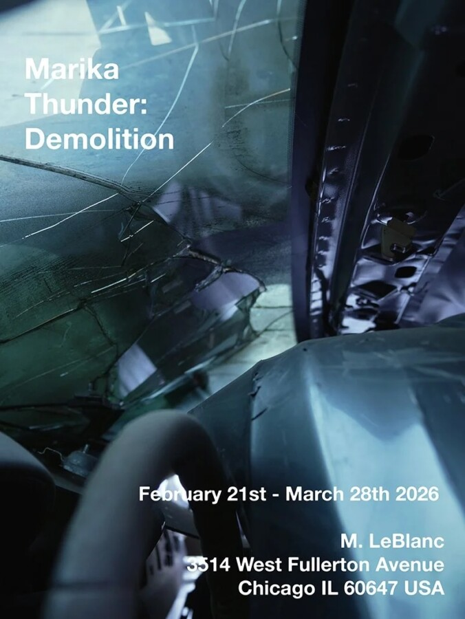

Marika Thunder: Demolition
The gallery is proud to present its debut exhibition with New York artist Marika Thunder. Comprising the exhibition will be select recent paintings from the artist.
Marika Thunder (b. 1998 in New York City) lives and works in New York City. Select recent solo exhibitions of Thunder’s work include, ‘Sensitive Machines’ (2025) at Caprii Room (Sies + Höke), Düsseldorf, DE, ‘Dr. Oppenheimer’ (2025) at Will Shott in New York City, ‘Desire’ (2024) at the National Arts Club in New York City, and ‘Body Of Work’ at Reena Spaulings in Los Angeles. In addition, Thunder participated in numerous group exhibitions recently; select exhibitions include ‘Revolve’ (2025) at Market Gallery in New York City, ‘Small Format Painting’ (2025) at 56 Henry in New York City, ‘Holy Motors’ (2025) at Temple Projects in Los Angeles, ‘This Might Be It’ (2024) at Galerie Hussenot in Paris, FR, and ‘Everyone Loves Picabia’ (2024) at David Lewis Gallery in New York. Thunder’s practice has been reviewed or featured in many publications, such as Re-Edition Magazine, Diva Corp Magazine, Anarchy Daily, Popeye, GQ, Marfa Journal, Purple Magazine, Snuff Magazine, and Interview Magazine.